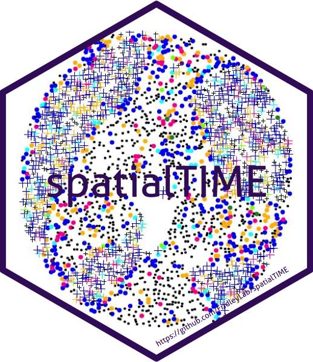

Bivariate Pair Correlation Function
Source:R/bi_pair_correlation.R
bi_pair_correlation.RdThe cross-type pair correlation function: clustering of counted cells at distance r from anchor cells, as a density rather than a cumulative count. Cells positive for both markers of a pair are excluded from that pair.
Usage
bi_pair_correlation(
mif,
mnames,
r_range = NULL,
num_permutations = 100,
edge_correction = "translation",
keep_permutation_distribution = FALSE,
workers = 1,
overwrite = FALSE,
xloc = NULL,
yloc = NULL,
...
)Arguments
- mif
object of class
mif- mnames
character vector, or a two-column data frame of anchor/counted marker combinations to run
- r_range
numeric vector of radii. If
NULL,spatstatchooses the range.- num_permutations
integer number of permutations used to estimate CSR
- edge_correction
edge correction passed to
spatstat.explore::pcfcross()- keep_permutation_distribution
boolean; keep each permutation's result or average them to one row per marker pair and radius
- workers
integer number of CPU cores used to process samples in parallel
- overwrite
boolean; replace an existing
bivariate_pair_correlationslot rather than appending it as a newRun- xloc, yloc
the x and y columns giving cell centres. If left
NULL,XMin,XMax,YMinandYMaxmust be present.- ...
other parameters passed to
spatstat.explore::pcfcross(), plus support for deprecated argument names (see Details).
Output columns
As of 2.0.0 this function returns the same columns as bi_ripleys_k(), with
Observed g in place of Observed K. From/To are now Anchor/Counted,
Theoretical g/Permuted g are now Theoretical CSR/Permuted CSR,
Degree of Correlation * is now Degree of Clustering *, and
Permuted_larger_than_Observed is now Permutations Larger than Observed.